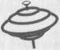

JENNIFER FULTON
ou le Rivage sacré
Traduction de l’anglais (Nouvelle-Zélande)
TALIE MICHEL

KTM éditions
Titre original :
The Sacred Shore
Éditeur original : Bold Strokes Books, Inc.
© Jennifer Fulton, 2008
Le code de la propriété intellectuelle n’autorisant, aux termes des paragraphes 2 et 3 de l’article L. 122-5, d’une part, que les « (...) copies et reproductions strictement réservées à l’usage privé du copiste et non destinées à une utilisation collective », et d’autre part, sous réserve du nom de l’auteur et de la source, que « (...) les analyses et les courtes citations justifiées par le caractère critique, polémique, pédagogique, scientifique ou d’information », toute représentation ou reproduction intégrale ou partielle, faite sans le consentement de l’auteur ou de ses ayants droit ou de ses ayants cause, est illicite (article L. 122-4). Cette représentation ou reproduction, par quelque procédé que ce soit, constituerait donc une contrefaçon sanctionnée par les articles L. 335-2 et suivants du code de la propriété intellectuelle.
© KTM éditions, 2015
15, rue Claude Tillier -75012 Paris
ISBN 978-2-913066-59-5
Chapitre 1
Merris Randall contemplait le menu. Réalisé à la main, le texte en relief était doux au toucher. Elle songea que dans quelques années, plus personne ne se souviendrait du rendu du vrai travail d’imprimerie. Un subtil dessin en filigrane attira son regard. Deux cœurs entrelacés pour la Saint-Valentin. Comment avait-elle pu oublier ? Si ça ce n’était pas un acte manqué !
— Je ne sais pas quoi choisir, se plaignit sa compagne, comme si le restaurant avait pour principe de frustrer ses clients par excès de choix.
Bethany, se souvint Merris. Ou était-ce Tiffany ? Elle ressemblait à une Tiffany.
— Leur mahi-mahi est bon, suggéra-t-elle.
— Je ne peux pas manger de poisson.
Je ne peux pas. La perspective réjouissante d’une soirée passée à parler d’allergie alimentaire, ou, encore mieux, à débattre de la question brûlante de savoir si les poissons avaient ou non une âme, lui pendait au nez. Merris laissa passer l’occasion.
— Je croyais que tu avais une Porsche, remarqua Bethany après un autre regard sourcilleux sur le menu.
— Avant oui.
— Oh, non ! l'on ex l'a eue ? Quelle poisse ! De grands yeux bleu pale scrutèrent le visage de Merris à la recherche d’une émotion. Mais tu as quand même eu la maison ?
Super. Une parfaite inconnue connaissait tous les détails sinistres de sa rupture. Merris se dit qu’Allegra en était sûrement la source. Son ex profitait de chaque oreille attentive pour faire son talk-show privé. C’était ainsi qu’elle avait découvert que leur relation n’était pas épanouie, encore moins monogame.
— La maison m’appartenait avant, dit-elle sur un ton peu engageant.
Le visage de Bethany s’éclaira.
— Ça doit être plutôt calme maintenant, sans les enfants.
Merris savait que ses poumons fonctionnaient, mais elle en eut quand même le souffle coupé. Elle se repencha sur le menu, les mots dansaient devant ses yeux, convergeant en des phrases qui n’avaient aucun sens.
Bethany eut la décence de rougir.
— Merde, c’était vraiment nul de dire ça.
— C’est rien. De toute façon, tu as raison. Les repas ne sont plus les mêmes sans les morceaux d’omelette lancés par-dessus la table.
Bethany se tortilla nerveusement.
— Je n’aurai jamais d’enfants. Je suis bien trop égoïste pour ça !
Il eût été bien vu d’affirmer le contraire, mais pourquoi débattre d’une évidence ? Merris changea de sujet.
— As-tu une préférence pour le vin ? Ou tu préfères que je choisisse ?
Bethany haussa les épaules.
— Je ne suis pas difficile. J’aime bien le rosé.
C’était une mauvaise idée, conclut Merris. En face d’elle, était assise une jeune personne attirante qui s’était apprêtée pour un rendez-vous surprise avec une femme blasée de 33 ans qui se remettait d’une rupture difficile. Dommage pour elle, car après ces remarques dépourvues de tact et son ignorance sur les vins, elle passait pour une idiote superficielle. C’est quoi mon problème ? se demanda Merris. Elle fit un effort, posa le menu et sourit à la jeune femme.
— Sam m’a dit que tu es bénévole au refuge animalier.
— Je donne un coup de main à la friperie. C’est trop cool. Tu peux voir ce qu’il y a de mieux avant tout le monde, ce qui est primordial.
Comme pour s’expliquer, Bethany ajouta :
— Je suis collectionneuse de Barbie.
Merris faillit répondre Tu te moques de moi. Mais au contraire, elle feignit un intérêt certain.
— Vraiment ?
Bethany ouvrit aussitôt son sac et en sortit la photo d’une poupée Barbie devant la tour Eiffel en toile de fond.
— 1959. En parfait état dans sa boîte d’origine. Tu ne me croiras pas quand je te dirai son prix.
— Épate-moi, l’invita Merris.
— 20 $ ! Un connard, qui s’était disputé avec sa femme, a fait un vide-grenier avec toutes ses poupées pendant qu’elle était en vacances. Sauf que c’est une pièce de collection !
— Tu as fait une bonne affaire alors, non ?
— Elle vaut environ 5 000 $, déclara Bethany rayonnante.
Merris siffla. Autant que des actions d’entreprises technologiques. Les petites filles dans toute l’Amérique gagneront plus en conservant leurs poupées. Elle ne comprenait pas vraiment l’intérêt de collectionner. Certaines personnes le faisaient pour de l’argent, mais pour la plupart, c’était une vraie passion. Et visiblement, c’était le cas de Bethany avec ses Barbie.
Merris jeta un coup d’œil autour d’elle. Naturellement, le restaurant était rempli de couples. La plupart se tenaient la main et il semblait n’y avoir aucun couple gay. En fait, la table de Merris était la seule dont les convives étaient de même sexe, hormis un groupe de quatre femmes un peu plus loin qui faisait un sort à un grand pichet de cocktail. Merris s’attarda un instant sur l'une d’elles, dans la trentaine, vêtue d’une robe en velours de couleur pourpre. Elle n’était pas du genre mannequin siliconée. Sa bouche était pulpeuse et inégale, son nez trop fort, ses sourcils foncés non épilés et droits. Ses longs cheveux noirs étaient négligemment coiffés à la grecque, dans un style mi-apprêté, mi-saut du lit. Sa robe, dans le même esprit, offrait un décolleté taillé suffisamment haut pour ne pas laisser entrevoir la naissance des seins, mais suffisamment bas pour mettre en valeur un cou et des épaules dignes de la couverture d’un beau livre pour yuppies. Merris imagina le titre : Hommage à la nuque.
Son regard glissa le long d’une épaule parfaite et d’un bras nu aux muscles dessinés. La main gauche était dépourvue de bague, ce qui eut pour effet d’accélérer son pouls de façon irrationnelle. Elle regarda les trois autres femmes pour détecter si l’une d’elles pouvait être sa compagne. Elles riaient et se touchaient comme des amies le feraient. La déesse affichait un sourire distant, comme si elle observait ses amies depuis sa petite île. Merris se demanda à quoi elle pensait.
***
Tu entres avec tes rêves intacts. Tu les laisses derrière toi, éparpillés dans les pièces que vous avez partagées, laissant leurs empreintes sur les murs qui en ont trop entendu, glissés sous les tapis dont tu as appris les motifs par cœur pendant les silences insupportables.
Comment l’amour pouvait-il échouer ? Olivia se sentait comme un capitaine qui aurait sabordé son navire et se rendait compte trop tard que la terre n’était pas là où elle aurait dû être. La passion n’est pas un instrument de navigation fiable. Le cœur n’est pas une carte en laquelle on peut avoir confiance.
Les personnes sensées qui n’étaient pas amoureuses lui avaient dit que c’était cuit depuis le début. Les signes étaient visibles pour tout le monde. Elle avait été assez folle pour se convaincre que l’amour allait triompher, quoi qu’il arrive. Aujourd’hui, elle aussi pouvait rompre le pain à la table de la désillusion. Ses amies appelaient cela, revenir sur terre.
— Ah, le coup de grâce, annonça Abigail tandis que le serveur approchait.
— Bavarois aux framboises, entonna-t-il, ne croisant aucun regard.
Olivia fixa le plateau. Le gâteau était en forme de cœur, rouge sang. Bizarrement, il était servi sur un plateau en bois. Un couteau tout droit sorti de la scène de la douche de Psychose était posé à côté.
Abigail se leva et brandit l’arme du meurtre.
— Joyeuse Saint-Valentin, mes chéries ! dit-elle, pétillante avant de plonger la lame au beau milieu du cœur où elle frémit, fermement plantée dans la planche en dessous.
— À Olivia !
Tout le monde leva son verre avec un sourire étincelant.
Olivia se força à rire et prit une gorgée.
— Bande de garces. Je vous déteste.
— Tu veux l’achever, ma puce ? proposa Abigail. Ou je le fais ?
— Je t’en prie.
Olivia détourna le regard de la scène du crime. La pièce n’était qu’un océan de couples plein d’entrain qui buvaient du champagne et se tripotaient, des amoureux qui savouraient le bonheur de la passion mutuelle. Ses yeux, soudain, se remplirent de larmes.
— Il est temps que j’aille me repoudrer le nez, dit-elle, en se levant brusquement.
Trois martinis, pensa Olivia, alors qu’elle se dirigeait chancelante vers l’escalier. Ce qu’elle voulait vraiment faire, c’était s’enfuir aussi loin que possible de ce restaurant. En fait, de sa vie. La rampe était moite sous sa main et elle resta figée en haut des marches, se demandant si la chute serait fatale.
— Vous allez bien ? lui demanda une femme derrière elle.
— Excusez-moi.
Olivia s’écarta à la hâte pour laisser passer l’inconnue et faillit perdre l’équilibre en se déplaçant. Une main lui attrapa le bras.
— Vous permettez.
Olivia lui jeta un regard à la dérobée et trouva un visage carré, des cheveux blonds cendré, des yeux couleur noisette perspicaces qui avait dû lire : Femme amère au cœur brisé qui essaye de noyer son chagrin. Gênée, elle se laissa guider au bas de l’escalier, après les palmiers, vers les toilettes. L’inconnue lui lâcha alors le bras et lui tint la porte ouverte.
Après un bref merci, Olivia se retrouva, Dieu merci, seule dans une petite pièce recouverte de marbre qui sentait un pseudo-parfum floral dont l’occupante précédente avait dû s’asperger trop généreusement. Elle avait à moitié envie d’ouvrir la porte pour voir si l’inconnue aux yeux couleur noisette était toujours là, à l’attendre comme un mari le ferait, quelques pas plus loin. Irritée par le chemin que prenaient ses pensées, elle fit couler de l’eau froide et s’aspergea le visage.
Cela lui avait paru être une bonne idée quand Abigail l’avait appelée avec son « au diable la Saint-Valentin » cynique.
— Il est temps de retourner dans le monde des vivants, avait-elle insisté. Il y a plein d’autres poissons dans l’océan et, si on arrive encore à se convaincre qu’ils en valent la peine, autant aller à la pêche. Pendant un instant, Olivia aurait aimé être comme Abigail, une femme pour qui l’amour et le sexe sont deux choses complètement indépendantes. Abigail avait depuis longtemps relégué la première dans la catégorie des ennuis, en faveur de la seconde et de son charme indéniable. Elle gardait ses émotions bien à l’abri pour ne pas être blessée par quelqu’un en qui elle avait confiance. Par conséquent, elle était heureuse et sûre d’elle.
Olivia s’observa dans la glace et essaya de se souvenir de son visage quand elle rayonnait de joie, d’espoir et qu’elle en imposait. En à peine trois ans, toute trace de cette personne avait disparu. Le maquillage pouvait camoufler les cernes causés par les larmes, mais pas l’absence de confiance en elle dans son regard. Elle se força à afficher son sourire habituel et suivit la mise en place du masque derrière lequel elle se cachait. Elle se dit que tout le monde agissait de la sorte. Peut-être qu’Abigail le faisait aussi. Peut-être que le monde entier était un bal masqué et que l’on ne voyait jamais vraiment les autres tels qu’ils étaient. Pas étonnant que l’amour soit un paradis artificiel. Pas étonnant que l’on devienne aliéné. Comment se sentir sereine en cachant sa vraie personnalité à sa compagne ? D’un autre côté, en se livrant complètement, le rejet est celui de son être profond. Peut-on s’en relever ?
Olivia appliqua du rose sur ses lèvres et recula du miroir d’un pas. Est-ce que cela aurait été différent si elle avait été une top-modèle pour maillots de bain ? Hunter était-elle à ce point superficielle ?
***
Merris traîna un moment près des toilettes, imaginant Bethany kidnappée par des aliens et la jeune femme en robe de velours bordeaux accepter son invitation à se joindre à elle pour le reste de la soirée. Elles ne parleraient pas de poupées Barbie ni du divorce de Merris, mais au contraire se découvriraient une passion commune pour la promenade nocturne dans une ville inconnue. Elles riraient parce qu’elles se souviendraient toutes les deux de la date, de l’heure et du lieu où elles avaient dégusté les meilleures huîtres, probablement des Malpeque ou l’une de ces incroyables variétés bretonnes. Puis, inéluctablement, en fin de soirée, elles s’enlaceraient.
Elle songea qu’elle aurait dû lui demander son nom. Non pas que cela aurait changé quoi que ce soit. Aucun alien digne de ce nom n’allait kidnapper Bethany. Et l’inconnue dans les toilettes était probablement une hétéro qui utilisait une base de données pour trier ses soupirants en fonction de leur charme, de leur intelligence, de leur sensibilité, de leurs compétences au lit et de leur compte en banque. Merris ne brillait dans aucune de ces catégories. En fait, selon Allegra, si tant est que son opinion comptât, elle ne sortait pas du lot sauf au niveau bancaire.
Bethany lui servait de thérapie. Au moins, Merris le reconnaissait. Son meilleur ami homo, Sam, avait arrangé le rendez-vous. Elle comprenait son raisonnement. Une écervelée à la poitrine opulente qui coucherait au premier rendez-vous, c’était gagné d’avance quand on avait l’ego blessé. Si Merris était un tant soit peu lucide, elle saisirait l’occasion. Qu’est-ce qui pourrait arriver de pire ? Elle imagina Bethany pensant aux accessoires de Barbie pendant qu’elles s’envoyaient en l’air. Elle avait besoin d’une cigarette. Dommage qu’elle ait arrêté.
Alors qu’elle revenait, le serveur s’approchait de leur table avec leurs plats. Bethany avait finalement commandé le poulet de Cornouailles.
— C’est la volaille entière, dit-elle éberluée.
— Tu n’es pas obligée de tout manger, objecta Merris. Elle avait commandé du homard du Maine. C’était la plus petite espèce, toujours meilleure.
Bethany tenta de planter sa fourchette dans son plat.
— C’est tellement horrible de trouver de vrais os.
— Tu veux que je rappelle le serveur ? Ils peuvent le désosser pour toi dans la cuisine.
Bethany parut emballée à cette idée.
— Oui, je veux bien. Sam m’avait dit que tu étais attentionnée.
Merris éclata de rire.
— Sam t’a fait l’article, hein ?
— Il a été très efficace, dit Bethany alors que le serveur emmenait son assiette. Il a dit que tu étais attentionnée, honnête et que tu méritais beaucoup mieux que... enfin, tu sais.
C’était Sam tout craché. À prendre parti sans aucune hésitation. C’était une des caractéristiques inhérentes aux meilleurs amis. Du coin de l’œil, Merris vit Miss cou et épaules revenir à sa table. Un peu plus tôt, ses amies avaient semblé conspirer à voix basse. De nouveau, elles s’animaient et celle qui avait une allure d’artiste et qui avait porté un toast, lui prit la main et la lui baisa cérémonieusement. Étaient-elles finalement ensemble ? Si c’était le cas, ce ne devait pas être une relation monogame. L’artiste avait reluqué Merris toute la soirée.
— Ne m’attends pas, dit Bethany.
Se sentant un peu coupable, Merris reporta son attention sur son rendez-vous galant et réalisa que Bethany lui montrait le homard, lui suggérant tout simplement de commencer sans elle.
— Je laisse refroidir un peu, dit Merris, en remplissant à nouveau leur verre pour se donner une contenance.
Ce n’était pas la première fois, depuis quelque temps, qu’elle se sentait désorientée. Elle avait perdu le contrôle de sa vie. C’était comme si une roue cosmique avait été mise en mouvement et quoi qu’elle fasse, ce serait sans incidences. Elle n’avait pas de travail, pas de relation et pas d’enfants, à moins de traverser la moitié de la ville pour les voir. Tout ce qui avait donné un sens à sa vie jusque-là avait été subitement balayé.
— Ouah, s’exclama Bethany à l’arrivée de son plat. Il y a même de la garniture en plus.
Tout ça pour finalement ne manger que trois bouchées, remarqua Merris un peu plus tard, en terminant les dernières miettes de son homard. Maintenant qu’elle y repensait, elle se rendait compte que Bethany non seulement collectionnait les Barbie, mais qu’elle voulait aussi en être une. Manger était clairement hors de question, ce qui expliquait l’aspect disproportionné des mains et des pieds de la jeune femme. Une ossature moyenne, elle ne pourra jamais être menue, seulement mince. Et puis ses seins...
Merris avait toujours été stupéfaite par les femmes qui s’affamaient pour rentrer dans du 38, et s’empressaient de mettre des implants pour retrouver la poitrine qu’elles s’étaient efforcées de faire disparaître. Certains trouvaient que de gros seins sur un corps de gamine c’était très sexy. Merris n’en faisait pas partie.
En regardant au-delà de Bethany, elle vit les quatre autres jeunes femmes se lever. C’était l’occasion. Et si elle glissait sa carte à Miss l’artiste ? Ça valait le coup de sortir avec elle au moins une fois, si elle parvenait à lui soutirer le nom et le téléphone de sa magnifique amie. Merris trouva une carte de visite et se demanda si elle était assez effrontée pour le faire. Elle manquait de pratique.
— Excuse-moi. Elle utilisa le même prétexte que celui employé précédemment, quand elle avait vu la déesse en robe de velours se diriger vers les toilettes. Mon bipeur vient encore de sonner.
— Bien sûr. Pas de problème, dit Bethany.
Merris la remercia et descendit rapidement les escaliers. Dans l’entrée, elle fit semblant de prendre un appel sur son mobile. Lorsque les quatre femmes arrivèrent, elle leva les yeux, l’air de rien. L’artiste lui fit un sourire aguicheur, mais avant que Merris ne puisse lui glisser sa carte de visite, l’une des filles du groupe lui fit signe comme si elles étaient de vieilles connaissances.
Elle avait des cheveux auburn, des taches de rousseur et Merris ne l’avait jamais vue.
— Merris ! Merris Randall ? Tu ne te souviens probablement pas de moi. Polly Simpson. J’étais à ton mariage. J’étais la coloc d’Allegra à l’université. C’était le jour le plus romantique de ma vie, et encore, ce n’est même pas moi qui me mettais la corde au cou, dit-elle en se tournant vers ses amies, surexcitée. Mais vous savez pour certains couples, on sait tout de suite que ce sera pour toujours. Oh, laisse-moi te présenter tout le monde !
Merris remit son téléphone à sa ceinture et serra la main de Polly et d’une jeune femme nommée Kate, puis celle de l’artiste, autrement appelée Abigail Zola, un nom qui ne pouvait qu’être inventé.
Polly en arriva finalement à la déesse.
— Et voici Olivia Pearce.
Merris imagina prendre cette main tendue et entraîner sa propriétaire à l’extérieur. La soirée était glaciale, les étoiles brillaient comme des éclats de verre sous un ciel nocturne. Elles pourraient marcher le long des rues sombres et faire comme si elles étaient à Venise. Merris charmerait la belle Olivia avec des histoires mondaines et de belles manières, elle gagnerait sa confiance en ne prenant aucune liberté. Ce n’était pas le genre de femme que l’on coinçait dans une impasse.
Ce qui arriva réellement, c’est que la poignée de main fut maladroite. Pire encore, elle rougit, ce qui ne lui était jamais arrivé. Courtoisement, Olivia fit comme si elle ne remarquait rien. Peut-être qu’elle n’avait effectivement rien remarqué de son île lointaine.
— Comment allez-vous ? dit-elle avec un accent anglais, d’une voix basse et douce. Elle retira sa main promptement.
Merris s’éclaircit la gorge, chercha quelque chose à dire.
— Eh bien, heureuse de vous avoir rencontrées, fut tout ce qu’elle réussit à dire.
— Dis bonjour à Allegra de ma part, s’il te plaît, dit Polly. Ça fait un bail.
— Je le ferai si je la vois, répondit Merris prudemment. Elle ne souhaitait pas encourager plus de questions, mais elle voulait qu’Olivia Pearce sache que le « pour toujours » tant vanté avait fait défaut. Olivia parut imperméable à l’information, mais la bouche de Polly se figea en un petit O. Elle commença à dire quelque chose, puis regarda désespérément Abigail, dont le rôle était apparemment de sauver les gens qui mettaient les pieds dans le plat.
Abigail saisit l’occasion avec une sincérité déconcertante.
— On dirait bien que Merris aurait dû se joindre à nous ce soir. Le jour de la saint Valentin est le jour de notre assemblée générale annuelle. Celle de la Société pour les challengers romantiques.
Merris sourit.
— Est-ce que je peux demander quels sont les critères d’admission ?
Abigail, avec une longueur d’avance, mit sa carte dans la poche de Merris.
— Appelle-moi et on en discutera. En attendant, dit-elle en jetant un œil vers les escaliers, je crois que ton rendez-vous galant te cherche.
À mi-chemin dans les escaliers, Bethany ne put refréner une moue et lui lança avec un regard noir :
— Chérie, tu voulais que je commande le café ?
Oh, super. Merris entendait déjà tout le monde en tirer une conclusion hâtive. D’abord, elle faisait des allusions subtiles à sa rupture. Maintenant, une jeune femme de 22 ans avec « briseuse de foyer » écrit sur le front l’appelait Chérie. Merris ravala son envie de proclamer, je ne suis infidèle à personne. Non seulement cela lui donnerait l’air d’être coupable, mais avec sa supposée « amoureuse » debout à côté d’elle, également celui d’être une vraie mufle.
Rassemblant ce qui lui restait de dignité, elle répondit :
— Du café, c’est très bien. J’arrive tout de suite.
Au diable les présentations, comme si Bethany représentait quelque chose. Merris savait qu’elle avait déjà l’air rustre. Est-ce que cela avait une quelconque importance qu’elle se dérobe aux civilités ? Elle leur souhaita à la hâte une bonne soirée.
Seule Abigail la regarda dans les yeux et Merris eut la nette impression qu’elle savait exactement ce qui se passait et trouvait cela très amusant. En ce qui concernait la déesse, elle était déjà sortie tandis que ses amies en étaient encore à fermer leur manteau.
Chapitre 2
Ce qu’il y a de magnifique à Cherry Creek ce sont les murs hauts, se dit Merris en regardant le portail automatique s’ouvrir. Ce qui était moins agréable, c’était que tout le monde pensait qu’elle devait rouler sur l’or, puisqu’elle vivait là. La maison avait été le seul gros investissement de ses parents. Il n’y avait aucun fonds d’investissement pour financer les taxes foncières et l’entretien. Bien au contraire, Merris travaillait d’arrache-pied depuis qu’elle avait hérité de la maison, six ans plus tôt.
Rétrospectivement, elle se rendait compte qu’Allegra n’avait jamais vraiment cru devoir, comme tout le monde, travailler pour vivre. Pour une fille dont la famille avait vécu en mobile home, la grande maison de Cherry Creek signifiait qu’on était riche, qu’on veuille bien l’admettre ou non. Et Allegra s’était comportée comme telle, dépensant sans compter l’argent de Merris comme si de rien n’était.
D’un certain point de vue, cela avait été une bénédiction. Merris n’aurait jamais lancé sa propre entreprise de logiciels si elle n’avait eu besoin de renflouer son compte en banque. Allegra en avait eu l’idée. Hypothéquer la maison, devenir riche en profitant du boom de l’informatique et avoir un bébé. Le reste était de l’histoire ancienne.
Au lieu de s’engouffrer dans la bulle informatique du .com, la société de Merris avait développé des systèmes de cryptage et de sécurité en ligne. Les affaires furent florissantes et Allegra donna naissance à des jumelles. La fin de l’histoire aurait dû être heureuse. Elles avaient une magnifique maison, une vie comblée. Comment cela avait-il pu tourner aussi mal ? Les jumelles avaient 16 mois quand Merris avait accepté une offre de rachat de sa société que seul un idiot aurait refusée. La même semaine, elle avait découvert qu’Allegra avait une liaison ; non seulement elle avait une aventure, mais en plus elle lui payait son loyer et ses courses. La liaison durait depuis six mois. Quand Allegra avait-elle prévu d’en parler ?
— Je ne vois pas quelle différence cela fait, avait dit Allegra quand Merris l’avait mise devant ses responsabilités. Je ne vais nulle part.
— Ma compagne voit quelqu’un depuis six mois, et ce n’est pas censé m’affecter ?
— J’ai essayé de te le dire, avait grommelé Allegra.
— Tu as essayé ! Quand as-tu essayé ? Avant de louer cette garçonnière avec mon argent ?
— Je savais que tu ne comprendrais pas. Je savais que tu allais le prendre comme ça. C’est pour ça que je ne pouvais rien te dire.
— Donc tu m’as trompée et tu m’as menti, mais c’est de ma faute ?
— Je suis désolée, d’accord ? J’ai merdé. Ça devait juste être une passade. J’allais arrêter de la voir, mais...
— Mais ?
Allegra avait baissé la tête.
— Elle me rend heureuse.
Merris avait pris une profonde inspiration et expiré lentement, pour se calmer.
— Et moi non ?
Allegra avait passé sa main dans ses cheveux blonds, un geste qui démontrait clairement sa désillusion sans avoir besoin d’en dire plus.
— Les gens s’éloignent, avait-elle dit comme si elle choisissait ses mots avec précaution. Tu avais d’autres priorités. D’abord c’était le travail, ensuite les filles. Il y avait toujours quelque chose.
Merris avait failli s’étrangler.
— J’ai réorganisé toute ma vie pour toi. J’ai dû travailler comme une dingue parce que tu avais décidé de dépenser 20 000 $ dans un collier de perles sans me le dire. Tu te rappelles ?
— Ça doit te faire du bien de me balancer ça à la figure à chaque fois qu’on se dispute.
— Je suis désolée. Merris avait ravalé sa colère. Après leur dernière dispute, elle avait promis qu’elle arrêterait de mentionner ce maudit collier. Cela n’a tout simplement aucun sens, avait-elle dit finalement en rompant le silence tendu qui s’était installé. Si tu n’étais pas heureuse avec moi, pourquoi diable es-tu tombée enceinte ?
— On avait fait un marché, tu te souviens ? Tu voulais des enfants.
— Est-ce que tu insinues que tu ne veux pas de nos filles ?
— Ne sois pas ridicule. Je suis leur mère ! La bouche d’Allegra avait tremblé. Ce n’était pas prémédité, tu sais.
Merris était restée silencieuse. Elle avait deux alternatives. Elle pouvait réagir à chaud et mettre sa compagne dehors, ou elle pouvait trouver un moyen de reconstruire leur relation. Pour n’importe quelle femme, avoir un bébé était difficile émotionnellement. Merris avait lu tous les livres sur le sujet. Tous décrivaient longuement la transition difficile par laquelle passaient les mères. Beaucoup ne se sentaient plus attirantes et perdaient confiance en elles. Après un bébé, les relations se tendaient. Les gens faisaient des erreurs. Mais dans un couple engagé on pouvait se pardonner et repartir du bon pied. Parfois, une épreuve comme celle-là pouvait renforcer le lien qui unissait deux personnes.
Merris avait observé les mèches blondes rebelles qu’Allegra s’efforçait de dompter avec de la mousse et du gel. Pleine de vie et sans conteste pourrie gâtée, sa compagne était habituée à être le centre du monde. Merris pouvait comprendre à quel point cela avait dû être déstabilisant pour elle de ne plus pouvoir rentrer dans ses vêtements, de se rendre compte que la plupart des gens ne la voyaient plus comme une femme, mais seulement comme une mère. Pour couronner le tout, elle avait eu à gérer non seulement un, mais deux bébés quand, en fait, elle n’en voulait pas du tout.
En revanche, la vie de Merris n’avait que peu changé après la naissance des jumelles. Elle se levait et allait travailler tous les jours, rentrait tard s’il y avait du boulot, buvait des verres avec des amis, partait en voyage d’affaires. Elle attendait avec impatience les week-ends pour les passer avec ses filles ; c’était l’une des raisons pour lesquelles elle avait accepté l’offre de rachat de sa société. Les quelques compromis qu’elle avait dû consentir le valaient bien. Elle se sentait comblée et sa vie était équilibrée. Il ne lui était jamais venu à l’idée qu’Allegra ne ressentait pas la même chose.
Merris avait pris une profonde inspiration.
— Écoute, ne réponds qu’à une seule question. Est-ce que tu veux poursuivre notre relation ou non ?
— J’ai dit que je n’allais nulle part, avait rétorqué Allegra sur un ton monocorde. Rien dans ta vie n’a besoin de changer. Je serai là pour m’occuper de la maison et des filles, de tes vêtements et de tes dons aux œuvres de charité, pour m’assurer que le jardinier vienne, que tout soit en ordre lors des dîners que tu organiseras et que tes amies reçoivent bien leur carte d’anniversaire. C’est bien ce que tu veux ?
— Je croyais que c’est-ce que tu voulais aussi, avait dit Merris sèchement.
— Peu importe. Écoute, plein de gens font ce genre d’arrangement.
Merris avait demandé, obtuse :
— C’est-à-dire ?
— Ils restent ensemble pour les enfants et ils comblent leurs besoins avec quelqu’un d’autre.
— Ils restent dans le confort matériel que leur assure leur partenaire et vont baiser ailleurs en douce ? avait traduit Merris.
— Il y a bien longtemps que tu as cessé de te soucier de ma vie sexuelle.
— Ce n’est pas vrai, avait objecté Merris.
— Oh, s’il te plaît. C’est quand la dernière fois que tu m’as traitée comme ton amante et non comme ta putain de boniche ?
Allegra s’était tue, comme ébranlée par sa soudaine colère. Sa poitrine s’était soulevée de manière irrégulière. Elle avait pris un verre d’eau sur la table et bu une gorgée.
— Est-ce que tu veux dire que tout n’est qu’une question de sexe ? avait demandé Merris incrédule.
Allegra avait le regard perdu, lointain.
— Si cela te fait te sentir mieux, résume-le à ça...
— Et donc ? Tu es amoureuse de cette... Roméo ?
— Son nom est Corey, et elle me fait me sentir femme. Elle me fait... nous fait... passer en premier.
— Et moi non ?
Allegra avait fixé son verre.
— Ça ne mène à rien, avait-elle dit, presque pour elle-même. Tu transformes tout ce que je dis.
Merris avait eu du mal à croire ce qu’elle entendait.
— On a un passage à vide et tu vas chercher une maîtresse au lieu de m’en parler ?
— Tu es vraiment incroyable. J’ai les jumelles et notre vie sexuelle est inexistante. Je t’ai parlé. Pendant des mois. J’étais celle qui demandait si on pouvait travailler là-dessus, tu te rappelles ? J’essayais de sauver notre relation.
— Choisir quelqu’un d’autre est une drôle de façon de le faire, avait rétorqué Merris.
Allegra avait laissé échapper un profond soupir.
— Ce que je dis n’a aucune importance ? Tu vas tout me mettre sur le dos. Je ne suis qu’une pauvre salope superficielle qui s’est servie de toi, et toi la merveilleuse compagne qui s’est fait avoir. Il ne s’agit que de ton ego.
Merris s’était retenue de ne pas la gifler.
— Non, il s’agit de confiance. Et de loyauté. Et d’honnêteté. Nous sommes ensemble.
— C’est toi qui le dis !
Allegra avait jeté son verre dans la cheminée.
Pendant un long moment, Merris avait fixé les éclats de verre éparpillés dans Pâtre. Elle se sentait étrangement détachée, stupéfaite. Elle avait jeté un œil à sa montre. Comment tout pouvait changer en une fraction de seconde ? Un peu étourdie, elle s’était levée.
— Arrêtons là, avant de dire des choses que nous allons regretter. Je vais aller passer le week-end à Vail. Pendant ce temps, je veux que tu rompes avec peu importe son nom. Quand je reviendrai, on recommencera et je te promets que les choses seront différentes.
Les yeux d’Allegra s’étaient remplis de larmes.
— C’est trop tard, Merris. Quand on est privé de quelque chose trop longtemps, on n’en a plus envie.
***
Pour une femme qui revendiquait n’avoir aucun don pour les finances, Allegra n’avait pas perdu de temps pour lui réclamer une pension et la moitié de sa fortune. Les avocats de Merris pensaient qu’elle aurait dû demander la garde, mais elle ne put se résoudre à utiliser leurs filles comme une monnaie d’échange. Quelles que soient ses fautes, Allegra était leur mère. Finalement, elles avaient trouvé un compromis que Merris pouvait accepter ; un fonds de placement aux noms de leurs filles et une pension alimentaire versée à Allegra pour leur prise en charge. En échange, Merris avait le droit de les voir sans restriction, et les filles ne pouvaient pas quitter le Colorado sans son accord. Aujourd’hui les papiers étaient signés. Officiellement, elles n’étaient plus une famille.
Merris passa du garage à l’intérieur de la maison. Ce dont elle avait envie, c’était de fumer cigarette sur cigarette et de se soûler, beaucoup. Mais au lieu de cela, elle prit une douche. Ce n’était pas tous les jours que l’on signait un chèque de deux millions de dollars pour se débarrasser d’une femme qui vous avait trahi. Elle eut une sueur froide en y repensant. Pendant un long moment, elle resta debout sous la douche. Le jet chaud lui faisait tellement de bien qu’elle ne voulait plus bouger. Et maintenant ? se dit-elle.
Chapitre 3
Les hêtres devant la maison d’Olivia indiquaient l’écoulement du temps. Comme l’amour, ils bourgeonnaient de promesses, se déployaient pour profiter du soleil avant qu’il ne devienne leur ennemi, puis ils se fanaient, tombaient et étaient piétinés. Dix mois avaient passé depuis sa rupture avec Hunter et pourtant chaque journée vide et interminable enchaînait sur une autre semblable. Elle savait que des mois avaient passé et que l’on avait changé de saison parce que les arbres le lui disaient. Une fois de plus, ils étaient nus. Ce serait son second hiver seule.
Un écureuil traversa en dansant la pelouse couleur rouge et or de son jardin, ses mains délicates attrapant des friandises. Bientôt, il neigerait, pensa Olivia alors qu’elle sortait sa voiture du garage. Le monde serait saupoudré de blanc. L’air lui ferait mal aux poumons et lui colorerait les joues. Les fêtes de Thanksgiving seraient très différentes cette année sans l’habituelle arrivée en force de la famille de Hunter.
Pour une fille unique, Olivia pensait qu’elle avait plutôt bien géré les rivalités et les familiarités de la tribu de Hunter. Ils étaient cinq sœurs et quatre frères. La plupart s’étaient mariés jeunes et, comme leurs parents, avaient eu plus d’enfants qu’ils ne pouvaient en assumer. Mais c’était une famille heureuse qui ne semblait pas avoir de problème avec l’orientation sexuelle de Hunter. Pour eux, la vie était on ne peut plus simple. Tu travaillais s’il y avait du travail, tu nourrissais tes gamins, tu allais à l’église, et tu étais adhérent à la NRA. Seuls les gens riches des villes comme Olivia avaient le temps d’être individualistes.
Olivia avait trouvé cette approche simpliste rafraîchissante. C’était l’une des choses qui l’avaient frappée chez Hunter. Enfin une femme qui disait toujours les choses telles qu’elles étaient, avait-elle pensé. Pas de bla-bla. Pas d’arrière-pensées. Après quelques années à Los Angeles, c’était comme un grand verre d’eau pure des montagnes pour un voyageur assoiffé. Olivia ne s’en lassait pas. Elle n’avait jamais rencontré quelqu’un comme Hunter. On n’était pas élevées comme ça, là d’où elle venait. Les femmes ne portaient pas de Stetson à Londres. Elles ne buvaient pas de bière, ne mettaient pas leurs bottes de cow-boy sur la table et ne jouaient pas de chansons d’amour sur leur guitare.
Les amies d’Olivia trouvaient Hunter ringarde. Olivia l’avait trouvée à tomber dès le premier bonjour.
C’était un samedi soir, presque quatre ans auparavant, et Benny Berenbaum, l’agent d’Olivia, avait dit qu’il voulait lui présenter quelqu’un. Elle devait porter une robe courte et des boucles d’oreilles luxueuses. C’était un cocktail. Ils étaient allés jusqu’à une propriété de style Tudor sur Beverly Hills et avaient été reçus à la porte par un authentique majordome, qui, lui avait confié Benny, arrivait tout droit d’Angleterre. Il avait été recruté par le gars dont ils allaient manger les petits fours, Steve Shaw. M. Shaw détenait Zane Records. Son label venait juste d’acheter six chansons d’Olivia pour sa dernière découverte présentée comme la « nouvelle KD Lang », comme si l’original avait déjà raccroché son chapeau.
— Je lui ai dit qu’on avait beaucoup d’autres chansons sous le coude, avait déclaré Benny en lui montrant le contrat.
— Zane, ce n’est pas un label de Country ?
Olivia avait essayé de ne pas paraître horrifiée.
— Une bonne chanson est une chanson qui s’accorde avec tous les genres.
— J’écris du blues.
— Tu écris des tubes, avait rectifié Benny. Qu’est-ce qu’on en a à faire s’il y a un violon ?
Steve Shaw le voyait de ce point de vue là aussi. Il aimait son travail. Train Rolled By l’avait fait pleurer la première fois qu’il l’avait entendue. Il lui avait pris le bras et l’avait entraînée sur le marbre italien près d’un groupe agglutiné autour d’un Steinway blanc. Un pianiste avec un nœud papillon jouait du jazz. Steve l’avait interrompu en demandant à l’assistance de faire silence. Il avait remercié deux ou trois personnes, fait des compliments qui paraissaient sincères à une autre à propos de son nouveau film, dit quelques mots sur les Grammys et annoncé :
— Je suis fier de vous présenter cette jeune femme qui va recevoir le prix de la nouvelle artiste country l’année prochaine, Hunter Carsen.
Les applaudissements s’étaient rapidement estompés quand une voix avait rempli l’atmosphère d’émotion.
— Ma peau marque facilement... et vous me serrez trop.
Au début Olivia n’avait vu que son chapeau à travers la foule. Mais Benny les avait entraînés plus près.
— Je sens le disque de platine, avait-il dit, se frottant les mains.
Olivia avait eu du mal à reconnaître sa chanson. Hunter Carsen la chantait comme si c’était l’une des siennes, insufflant de la vie et de la sincérité à chaque phrase, insufflant aux paroles un sens qu’Olivia n’avait même pas soupçonné. Sa voix était comme une drogue. Steve Shaw n’exagérait pas en évoquant un possible Grammy. Cette femme était bien plus qu’une bonne chanteuse ; elle était époustouflante. Ce quelque chose de subtil dont tout le monde raffolait, elle en était visiblement dotée à profusion.
Olivia avait détaillé son jean usé, ses bottes de cow-boy, sa boucle de ceinture stylisée, sa chemise noire, son Stetson noir et ses incroyables yeux bleu azur. Hunter avait retiré son chapeau quand elles avaient été présentées. Ses cheveux étaient courts et blond décoloré. Elle ne portait aucun maquillage et son sourire était franc et avenant. Rien de surfait chez elle. Dans un monde où les gens se savaient éphémères, elle n’avait aucun besoin de se faire passer pour quelqu’un d’autre. Hunter Carsen était authentique.
— Des chansons comme les tiennes me donnent envie de chanter, avait-elle dit d’une voix basse avec un accent qu’Olivia n’avait pas reconnu.
— Je n’aurais jamais imaginé mes chansons comme ça, avant que tu ne les chantes. Et, parce qu’on était à LA, elle avait ajouté : Je ne fais pas que le dire. Je le pense vraiment.
Hunter lui avait fait un large sourire.
— On dirait bien que je viens de vendre mon premier album.
Olivia avait éclaté de rire et rougi. Stupéfaite par la chaleur de ses joues, elle avait demandé :
— Où es-tu descendue ?
— À l’Hôtel California. J’ai toujours rêvé dire ça.
Olivia savait que son rire avait paru forcé et superficiel. Elle avait, semble-t-il, perdu le contrôle des muscles de son visage. Même Benny avait remarqué son inconfort.
— Un verre d’eau, ma poulette ? avait-il demandé.
— S’il te plaît, avait répondu Olivia trop rapidement. Elle s’était dit d’arrêter de se comporter comme une groupie de 12 ans devant une femme qui n’était même pas encore une star, avant de poursuivre, sans conviction :
— Je ne suis jamais descendue dans celui-là.
Pour être franche, elle ne savait même pas que cet hôtel existait en dehors de la chanson des Eagles.
— En fait, je plaisantais. Je suis au Beverly Hills sur Sunset. Si tu n’as rien d’autre après, peut-être que tu pourrais y passer.
Le regard de Hunter était franc et amusé.
— Je crois que Benny a prévu quelque chose.
— Alors dis-lui que tu es occupée, avait rétorqué Hunter d’une voix trainante en parcourant langoureusement le corps d’Olivia de son regard bleu. Je travaille sur un arrangement pour l’une de tes chansons. Ton aide serait la bienvenue.
Les oreilles d’Olivia avaient bourdonné, son pouls s’était accéléré. Elle avait hésité en sondant le visage de Hunter.
— Tu crois que je suis en train de te draguer ?
Olivia avait cligné des yeux de surprise.
— Non. Je...
— Ce n’était pas le cas, mais j’aimerais bien.
Olivia savait qu’elle aurait dû dire quelque chose de subtil et décliner habilement l’invitation. C’était le monde de la musique. On était censé faire ses preuves d’abord, et ensuite annoncer son orientation sexuelle, pas l’inverse. Quelqu’un aurait dû le dire à Hunter. Mais contre toute attente, elle avait dit :
— Allons-nous-en.
C’était il y a seulement quatre ans. Elle avait l’impression que c’était il y a une éternité.
***
Olivia appuya sur le bouton play de son lecteur CD quand elle s’arrêta à un autre feu rouge. La circulation à Cherry Creek était déjà dense. Tout le monde sortait le samedi matin. Trouver une place près de L’Atelier des mots serait le test karmique du jour. Ou bien les dieux étaient avec elle, ou contre elle.
Elle se sermonna : les signes et les présages c’étaient pour les vieilles dames qui jouaient leur retraite à Vegas. Une Anglaise de bonne famille, instruite et raisonnable, ne se laissait pas troubler par une quelconque superstition. Elle se dit qu’elle finirait de toute façon par se garer au parking. Pourquoi faire des tours du pâté de maisons et s’exposer à une loterie cosmique ? D’un autre côté, peut-être qu’elle devrait être plus ouverte aux forces de l’univers, qu’importe ce qu’on lui avait enseigné à l’école presbytérienne pour filles.
Contre toute attente, elle trouva une place sur Fillmore. Elle savourait encore sa victoire dix minutes plus tard tandis qu’elle feuilletait un guide touristique sur Londres dans sa librairie préférée. C’était toujours intéressant de voir ce que d’autres personnes racontaient sur l’endroit où l'on était né. Les étrangers s’émerveillaient de sites que l'on ne remarquait même plus.
Olivia avait grandi dans l’un des immeubles blancs élégants qui bordaient Kensington Gardens. Sa petite enfance avait été rythmée par les balades en bateau sur le lac Serpentine, la découverte des musées locaux, les nombreux concerts et manifestations politiques dans Hyde Park. Des gens venaient du monde entier pour voir ce qu’elle considérait comme normal : la relève de la garde à Buckingham Palace, Big Ben, la Tour de Londres. Pourtant ces lieux n’étaient pas ce qui lui manquait le plus. Le vert intense de l’Angleterre lui manquait, les tapis de jonquilles au bord des routes de campagne, les minuscules encadrements de portes dans les pubs construits il y a des centaines d’années, à l’époque où les gens ne faisaient pas plus d’un mètre cinquante. Parfois, même le ciel gris et la menace imminente de la pluie, presque tous les jours de l’année, lui manquaient.
Souriante, elle reporta son attention vers la section Europe du rayon voyage. La Toscane était une valeur sûre. Prague était plaisant. Ou alors l’incomparable Péloponnèse, où Pâris avait enlevé Hélène et déclenché la guerre de Troie. Quand elle était enfant, elle avait passé de nombreux étés heureux à parcourir le continent avec ses parents qui considéraient que les voyages étaient un excellent substitut à la scolarité.
Finalement, ils avaient succombé aux usages et l’avaient envoyée en pension dans la même école que sa mère. Ils regrettaient encore leur décision, rendant l’école presbytérienne responsable de son goût pour la viande et de son penchant pour les chaussures très chères. Comme la plupart des socialistes issus d’un milieu aisé, ils avaient choisi l’enseignement privé pour leur enfant afin de mieux se complaire dans la culpabilité ensuite.
Olivia se dit qu’ils seraient ravis de la voir. Cela faisait un moment. Si elle avait besoin de se cacher et de panser ses plaies quelque part, pourquoi ne pas choisir le réconfort familier des siens ? Elle s’imagina expliquant ce qui était arrivé. Les visages sympathiques mais pas étonnés. Retourner en Angleterre serait comme un échec, alors qu’elle s’était construit une nouvelle vie de l’autre côté de l’Atlantique. Elle devrait trouver autre chose pour aller de l’avant. Presque un an s’était écoulé. Pourquoi avait-elle toujours ce poids ?
Olivia avait l’étrange sensation qu’il y avait un endroit, une destination qui n’attendait qu’elle. Un lieu inconnu. La miraculeuse place de stationnement de ce matin était un signe, se dit-elle convaincue. Elle s’en était remise aux forces du destin, et elles s’étaient manifestées. Ses mains parcoururent les étagères. Un petit volume attira son regard. Un Coin de paradis. C’était un cliché, mais elle sortit quand même le livre. La quatrième de couverture le décrivait comme un guide confidentiel des refuges dans le Pacifique pour les voyageurs en quête de tranquillité. Naturellement, elle fit ce que toute intellectuelle qui se respectait ferait et alla droit aux photos.
De son point de vue, les plages idylliques se ressemblaient toujours. Et pourtant elle eut le souffle coupé par une photo panoramique visiblement prise d’une véranda ombragée. Un lagon turquoise bordé de sable qui semblait incroyablement pailleté. La légende disait Les couples en lune de miel peuvent oublier Moon Island. Les coutumes locales bannissent les hommes de ses rivages sacrés ! Olivia feuilleta encore quelques pages et se rendit compte que l’on avait déchiré ce qui concernait Moon Island et, comble de malchance, c’était le seul exemplaire sur l’étagère. Encore plus ennuyeux, Moon Island n’était mentionnée dans l’index d’aucun des autres livres sur la région. Perplexe, elle se dirigea vers le pupitre d’information.
— Je ne trouve même pas l’endroit dans une encyclopédie, fit-elle remarquer.
— Le mieux est de voir avec une agence de voyages, lui dit la jeune femme, en lui rendant Un Coin de paradis. Ce livre est épuisé.
— Bien sûr, Olivia leva les yeux au ciel. Et si aucun autre livre vendu à L’Atelier des mots ne mentionnait Moon Island, l’endroit n’existait probablement pas. Irritée, elle acheta quand même le livre abîmé et l’emporta au café à l’étage.
Comme d’habitude, l’endroit était bondé, aucun signe de personne sur le départ. Elle allait devoir s’asseoir avec des inconnus. Habituellement, cela lui était égal, mais ce matin elle n’était pas d’humeur. À une table toute proche, quelqu’un était plongé dans un journal, le visage entièrement caché. Un autre buveur de café antisocial... parfait. Olivia s’approcha de la table et demanda aimablement :
— Ça vous dérange si je m’assieds ?
— Pas du tout. La tête penchée ne se leva même pas pour voir qui demandait.
Soulagée, Olivia posa son café et poliment positionna sa chaise. Tournant le dos à l’inconnu, elle ouvrit son livre et étudia à nouveau la photo. Est-ce qu’un endroit pareil existait vraiment ? Elle se mit à rêvasser : le sable chaud glissant entre ses orteils, l’odeur du lait de coco, le bruit rassurant des vagues mourant sur le rivage, un coucher de soleil romantique, le rythme des ukulélés, Hunter qui l’embrassait.
***
Merris jeta un bref coup d’œil au bruit bizarre émis par la femme qui partageait sa table. Est-ce qu’elle était tombée sur quelque chose ? Regardant par-dessus son journal, elle eut le souffle coupé en la reconnaissant. La femme du restaurant, il y a plusieurs mois. Olivia Pearce. Aujourd’hui ses cheveux noirs étaient attachés en une épaisse queue-de-cheval. Chez n’importe qui, ce style aurait pu paraître ordinaire. Olivia portait cependant une paire de longues boucles d’oreilles en or ornées de grenats qui attiraient l’attention sur ses oreilles parfaites et, bien sûr, sur son long cou de velours. Merris trouva qu’elle ressemblait à un portrait de Frida Kahlo.
Il y avait un calme chez elle qui irradiait la paix intérieure. Peut-être qu’elle était bouddhiste. Ou bien elle méditait ou faisait du yoga. Elle avait la grâce d’une danseuse ou d’un mannequin et ne semblait pas en être consciente. Merris songea que pour cette femme, l’apparence n’avait aucun intérêt. Ce n’était pas souvent que l’on rencontrait quelqu’un qui avait l’air si à l’aise dans ses baskets. Elle réprima une envie impérieuse de se pencher et de la toucher comme on le ferait d’une peinture, au contraire, elle se redressa et engagea la conversation par une phrase convenue.
— Excusez-moi. On ne s’est pas déjà rencontrées quelque part ?
— Je crois que vous avez été prévenante avec moi, une fois dans un restaurant.
Polie mais pas encourageante.
— Vous prévoyez des vacances ?
Merris indiqua le livre.
— Je me mets en appétit.
Un léger sourire.
Merris replia son journal.
— Je vais me chercher un autre café. Vous en voulez un ?
Seulement une légère hésitation.
— En principe, je n’accepte rien de la part d’une inconnue. Mais pourquoi pas ?
Alors qu’elle commandait deux doubles expressos, Merris se demanda pourquoi elle faisait ça. Elle avait échoué à la vie de couple. Ce n’était pas le moment de chercher mieux que des rencontres sans lendemain, comme celles qui avaient ponctué ses neuf derniers mois. Depuis qu’elle avait signé ce gros chèque, elle avait sérieusement réfléchi et était arrivée à une conclusion incontournable. Elle avait saboté sa relation. C’était une réflexion perturbante, d’autant plus qu’elle en ignorait totalement la raison.
Elle posa leurs cafés et se dit qu’il n’y avait rien de mal à se faire une nouvelle amie. Ce n’est pas parce qu’elle la trouvait attirante qu’elle allait tenter quelque chose. D’après ce qu’elle savait, Olivia était hétéro et mariée.
— Je crois que mon amie Abigail espérait avoir de vos nouvelles, remarqua Olivia.
— Oh ?
La conversation ne prenait pas la tournure idéale.
— Elle a parlé de vous plusieurs fois après cette soirée au restaurant.
Était-ce, pour Olivia, la manière de laisser sous-entendre que sa copine artiste était gay, et que par la même occasion, elle aussi ?
— Pour être honnête, je ne vois personne en particulier, dit Merris. Juste des rencontres occasionnelles. Vous savez, pour ne pas oublier comment on ouvre la porte côté passager.
— Ah.
Pas de révélation en retour. Pas de questions indiscrètes. Juste un petit hochement de tête par empathie, une invitation à en dire plus ou à ne rien dire, à Merris de voir.
— Je n’ai pas la moindre idée du temps qu’il faut pour surmonter une rupture. Peut-être que je suis lente, dit-elle en cherchant désespérément à sortir de cette conversation superficielle.
Olivia prit une gorgée de café, le regard dans le vague.
— C’est compliqué ?
— On peut dire ça. Merris se surprit elle-même en ajoutant : Je me sens fatiguée. Incroyablement fatiguée.
Olivia la regarda dans les yeux.
— Ça se voit.
— Super !
— Impressionnant, n’est-ce pas, le mal qu’on peut se faire mutuellement ?
Une ride effleura l’apparente quiétude du visage d’Olivia. Dans son sillage Merris vit une douleur si crue et réelle qu’elle en fut secouée.
— On dirait que tu as de l’expérience.
— N’en a-t-on pas tous ?
Elle n’était pas sarcastique.
Merris ramena la conversation sur des banalités.
— Tu habites dans le coin ?
— Cherry Creek.
— Moi aussi. On est sûrement voisines.
— Si c’est le cas, peut-être que tu pourrais dire à ton jardinier d’arrêter de souffler des feuilles mortes dans mon jardin, dit avec sérieux Olivia.
— L’automne, grommela Merris. Ça ne t’énerve pas, cette tension à cause des feuilles mortes ?
— C’est comme un vent de paranoïa dans notre rue. L’année dernière, le gars d’en face a envoyé à tout le monde une facture pour ramassage de feuilles.
L’humour rendait la voix d’Olivia chaleureuse.
— Tu plaisantes.
— Maintenant, il a installé des caméras de surveillance supplémentaires sur son portail et, attends, elles sont orientées sur l’extérieur. Mon jardinier dit qu’il collecte des preuves. Tu sais, pour savoir à qui sont les feuilles qui tombent dans son allée.
Merris rit.
— Connard ! Depuis quand habites-tu à Denver ?
— Deux ans. Avant j’habitais à LA.
— Tu fais partie du mouvement migratoire californien ?
— On peut dire ça. Nous sommes venues pour la neige et on est restées.
Nous. Sur une impulsion, Merris proposa :
— En parlant de neige, je vais faire une balade en montagne demain. Ça ne te dirait pas de te joindre à moi ?
Il y eut une lueur d’intérêt incontestable dans les yeux sombres, avant que son visage ne se ferme à nouveau.
— Je ne peux pas. Mais merci d’avoir proposé.
— Une autre fois.
Merris haussa les épaules, se disant que ce serait sûrement fort peu probable.
Pour une raison étrange, cela la perturba. Elle savait qu’elle ne pouvait pas simplement dire au revoir et s’en aller. Dès l’instant où elle avait vu Olivia Pearce pour la première fois, elle n’avait cessé de penser à elle. Cela n’avait rien à voir avec un coup d’un soir ou avec l’habituelle quête post-rupture où l’on veut se prouver à soi-même que l’on peut s’en sortir. Dans un éclair de lucidité, Merris réalisa que son univers avait été chamboulé. C’était comme si une horloge longtemps arrêtée s’était remise en marche et qu’elle ne pouvait échapper à son tic-tac incessant. Elle sut avec une certitude aussi irrationnelle qu’impérieuse qu’en regardant Olivia, elle regardait sa destinée.
Soudain mal à l’aise, elle plongea la main dans sa poche.
— Si tu changes d’avis, voilà ma carte.
Pendant une fraction de seconde, elle eut l’impression qu’Olivia ne l’accepterait pas. Quand elle le fit, elle ne proposa pas la sienne en échange. Elle baissa les yeux sur la carte et les releva immédiatement comme si elle était agréablement surprise.
— Tu habites juste à côté de chez moi. Je suis probablement passée devant ta maison un millier de fois.
— Eh bien, la prochaine fois, arrête-toi.
Il lui fallut faire un effort surhumain pour rendre l’invitation amicale et nonchalante plutôt qu’une supplique. Laisse tomber tant que tu as l’avantage, se dit Merris. Elle sut d’instinct qu’Olivia ne répondrait pas si elle insistait.
— Je le ferai peut-être un jour.
Son visage était impassible. Elle mit la carte dans son livre et repoussa sa chaise. Merris nota mentalement le titre, Un Coin de paradis. Quelque chose sur les îles du Pacifique.
Olivia récupéra son manteau et son sac.
— C’était agréable de parler avec toi. Profite bien des montagnes.
Merris lui adressa un sourire cordial.
— Toujours. Prends soin de toi Olivia.
Espérant qu’elle se retournerait, mais sachant qu’elle ne le ferait pas, elle regarda Olivia s’éloigner. Ses chaussures paraissaient trop frivoles comparées à sa jupe noire et son chemisier crème, et Merris resta un instant bouche bée quand elle remarqua autre chose. Des bas. Avec une couture sur l’arrière, tout le long. Merris savait qu’elle affichait un air stupéfait quand Olivia se retourna. Elle lui adressa un semblant de sourire en levant la main en signe d’au revoir.
De tout son être, elle eut envie de lui courir après et d’insister pour la raccompagner ou, au moins, porter son sac jusqu’à sa voiture. S’efforçant à revenir sur terre, Merris lui fit signe en retour, puis reprit son journal et l’ouvrit au hasard. Le premier titre qu’elle vit proclamait, « Les conducteurs amoureux sont une menace, indique le rapport ».
Chapitre 4
— Cody ?
Annabel Worth attrapa son blouson en cuir et ses lunettes d’aviateur puis se dirigea vers la porte.
Sa compagne était allongée dans un hamac sous la véranda, sa tête brune penchée sur le côté, un thriller avec une couverture horrible ouvert sur le ventre. Ses petits seins se soulevaient et retombaient au rythme de sa respiration ensommeillée. C’était une de ces journées chaudes et tranquilles avec les palmes des cocotiers immobiles sous un ciel sans nuages, le tempo paresseux des vagues, les insectes trop léthargiques pour voler.
Même après cinq ans sur Moon Island, Annabel trouvait l’idée d’un été sans fin toujours aussi étonnante. C’était un truc de la côte est, se dit-elle. Trente ans à Boston, et on finit par s’attendre à du mauvais temps au détour du chemin. Elle hésita à réveiller Cody, mais finalement, se pencha pour déposer un baiser léger sur son front.
Avant qu’elle ne se relève, Cody lui saisit le bras et l’attira dans le hamac.
— Pas si vite, tu ne t’échapperas pas sans un baiser digne de ce nom !
— Ce truc va s’affaisser, protesta Annabel.
Les yeux gris sombre de Cody la regardaient avec un mélange de malice et d’invitation.
— Pas si on reste très, très immobiles.
Elle embrassa Annabel doucement et commença à tirer sa chemise hors de son pantalon.
Annabel écarta ses mains.
— N’y pense même pas, Cody Stanton. Nous avons des clientes qui attendent qu’on vienne les chercher à Raro.
Esquivant d’autres baisers, Annabel se remit maladroitement sur ses pieds et s’épousseta avec insistance.
— Quelquefois, j’aimerais que cet endroit ne soit pas aussi populaire, grommela Cody.
— Pour que tu puisses passer ta vie à lire des romans policiers ?
— Pour que l’on puisse faire l’amour à chaque fois qu’on en a envie, dit Cody vexée. J’en ai marre de te partager. Qui arrive cette semaine ? Une autre nana dans le placard qui s’offre une aventure dans le dos de sa petite amie ?
— Chérie, ce que font nos hôtes ne nous regarde pas. Nous gérons un lieu de vacances, pas une institution pénitentiaire.
— Je n’aime pas les briseuses de foyers.
— Eh bien, je ne pense pas que nous en ayons une qui arrive prochainement.
Annabel consulta son fichier.
— Demain, il y a une Chris Thompson qui débarque d’une croisière.
— Riche et seule, la cinquantaine qui a eu de la veine au Dinah Shore, interpréta Cody.
— Et puis il y a ces anthropologistes de l’université de Los Angeles qui viennent pour les cérémonies de Hine te Ana.
— Oh, super, grimaça Cody. Je les avais oubliées. Il va y avoir des Birkenstock devant toutes les portes. Naturellement Dr Je-ne-sais-quoi est végétarienne.
— Dr Glenn Howick, précisa Annabel. Nous allons les accueillir très chaleureusement. L’université a offert une bourse d’études à une jeune femme des îles Cook.
— En échange, le Dr Howick a le droit de traiter cet endroit comme un zoo humain ?
— Je lui ai parlé et elle a l’air très sincère. Écoute, il est dit dans le dossier que c’est une autorité internationale en matière de religions tribales antiques et des pratiques religieuses du Sud Pacifique. Elle a écrit sept articles très estimés sur le sujet.
Cody grommela.
— Tu vas être charmante avec elle, réitéra Annabel.
— De toute façon, elle perd son temps, murmura Cody. Elle ne pourra assister aux cérémonies que si une îlienne l’y invite, et cela n’arrivera pas.
— Elle dit qu’elle veut explorer les sites sacrés et interviewer quelques-unes des femmes qui y prennent part. Ça ne semble pas bien méchant.
Annabel avait informé le Dr Howick que les rituels auxquels participaient les femmes de la région sur Moon Island étaient secrets. Les hommes étaient interdits, et les non-îliennes ne pouvaient y assister que si elles étaient invitées par la ruahine. Comme la plupart des traditions préchrétiennes, les rituels de Moon Island avaient été proscrits par les missionnaires au siècle précédent et pendant de nombreuses années, les femmes qui persistaient à faire le dangereux voyage en pirogue jusqu’à l’île étaient punies à leur retour. Par la suite plus personne n’était venu, et Moon Island était restée à l’abandon.
Finalement, dans les années soixante, Annie, la tante d’Annabel, avait emménagé sur l’île avec sa compagne et sa fille. Les femmes des îles interprétèrent cela comme un signe des anciens dieux leur indiquant qu’elles aussi devaient y retourner et, peu de temps après, une prêtresse, la ruahine, fut nommée. Aujourd’hui, une fois par an, les femmes de la région faisaient une cérémonie spéciale en l’honneur de Mine te Ana, l’une des trois déesses qui, selon elles, vivaient sur Moon Island.
D’après la légende, Hine te Ana était une princesse qui avait échoué sur le rivage après avoir essayé de sauver la vie de sa fillette qui avait été réclamée par Tangaroa, le dieu de la mer. Blessée, elle avait escaladé les dangereuses falaises au-dessus de la plage et s’était réfugiée dans une grotte pour pleurer son enfant. Là, ses larmes avaient formé un grand bassin et quand Marama, la déesse de la Lune, avait regardé dans la grotte et vu dans les eaux argentées le reflet de Hine en larmes, elle avait eu pitié d’elle. Pour une nuit, elle réalisa le vœu le plus cher de la princesse : revoir sa fille.
Depuis ce jour, les îliens croyaient que toute femme invitée par la déesse à regarder dans les eaux magiques de la grotte voyait son vœu exaucé. Cependant, tout intrus qui regardait dans le bassin sacré sans sa bénédiction était maudit. Le lieu exact de la grotte était un mystère, mais pendant les rituels, il était dit que la déesse choisissait parfois une femme et qu’elle l’y conduisait.
Personne ne faisait plus le voyage vers Moon Island en pirogue. Annabel allait chercher la ruahine et les autres participantes sur Rarotonga et les ramenait en avion. Cody les accompagnait ensuite en bateau jusqu’au Rivage sacré, ainsi que l’on nommait la plage de Hine. Elle revenait les récupérer deux jours plus tard. Ce qui se passait entretemps était strictement tabou, ou sacré, et en parler était interdit.
— Où met-on le docteur ? demanda Cody. De l’autre côté de l’île, je suppose.
— Elles seront à Marama Bay, là où on pourra les surveiller.
— Je meurs d’impatience, marmonna Cody.
— Tu es vraiment incorrigible.
— Allons nous envoyer en l’air sur la plage, tant qu’on l’a pour nous toutes seules.
Il y avait une tension dans la voix de Cody qu’Annabel entendait rarement. Elle inclina la tête en une question implicite.
— J’ai envie de toi, dit Cody. Est-ce que c’est si difficile à croire ?
Annabel lui toucha le bras.
— Quand c’est sur ce ton. Oui. Tu as l’air de mauvaise humeur. Tu veux en parler ?
Cody balança ses pieds sur les planches de bois.
— J’ai l’impression que l'on n’a jamais de temps pour nous deux. Et il n’y a pas que ça. Depuis cette dispute à propos du bébé, tu es distante. Je déteste ça.
Annabel secoua la tête, perplexe.
— Je ne comprends pas de quoi tu parles. On est ensemble tout le temps. Et c’est la haute saison.
— Partons quelque part. Juste toutes les deux, fit Cody d’un ton soudain pressant. On pourrait fermer pendant un mois ou deux.
— Chérie, on est complet. Nous n’aurons pas de temps libre avant le milieu de l'année prochaine.
Cody soupira.
— On ne peut pas dire qu’on a quelque chose d’important ? Il y a plein d’autres îles dans le coin.
— Aucune n’est réservée exclusivement aux femmes. Nos clientes nous choisissent parce que c’est important pour elles.
— D’accord, alors prévoyons les dates et n’acceptons aucune réservation.
Annabel prit les mains de Cody, les approcha de sa bouche et embrassa tendrement ses paumes.
— Bonne idée. Je t’aime, dit-elle très sérieusement. Je suis désolée si tu as eu l’impression que je te rejetais.
— Je ne t’en veux pas, après ce que j’ai dit.
Annabel haussa les épaules.
— Eh bien, tu avais raison. Je ne suis pas très maternelle.
Cody rougit.
— C’était stupide et cruel de dire ça et je suis désolée. De toute façon, je n’ai pas entièrement rejeté l’idée, ajouta-t-elle sur la défensive. J’ai juste dit que je devais y réfléchir.
— C’était il y a six semaines.
— Il y a une limite de temps ?
Annabel sentit un pic de frustration. Elle s’était juré qu’elles n’en reparleraient plus. Sa compagne n’était pas prête pour un enfant. C’était aussi simple que ça. Cody avait cinq ans de moins qu’elle. L’horloge biologique d’Annabel tournait, mais pas celle de Cody.
Comme une idiote, Annabel avait été persuadée que Cody serait absolument enthousiaste à l’idée de fonder une famille. Elle avait abordé le sujet, une nuit après avoir fait l’amour, en pensant qu’elles s’endormiraient dans les bras l’une de l’autre, unies dans leur décision de commencer un merveilleux nouveau chapitre de leur vie. Au lieu de cela, Cody s’était comportée comme si Annabel plaisantait. Et puis, quand elle avait réalisé qu’Annabel était sérieuse, elle avait donné son opinion très clairement. Elle n’avait aucune envie d’élever un enfant et, encore plus décourageant, elle semblait même penser qu’Annabel ne ferait pas une bonne mère.
Annabel avait passé le reste de la nuit à pleurer dans la chambre d’amies et, durant les jours qui avaient suivi, elles s’étaient à peine parlé. Ensuite, Cody avait accusé Annabel de lui faire du chantage affectif pour arriver à ses fins, et elles s’étaient disputées encore plus que la première fois. Elles s’étaient finalement réconciliées, mais le mal était fait. Si elle était sincère, Annabel reconnaîtrait que Cody avait raison. Elle avait été distante depuis, pas assez sûre d’elle pour engager une nouvelle discussion. Le sujet était trop sensible.
— Ne recommençons pas, d’accord ? dit Annabel en s’efforçant d’adopter un ton neutre. Est-ce que tu peux comprendre que, parce que c’était important pour moi, je voulais que ça le soit pour toi aussi. Je commence seulement à accepter le fait que c’est différent pour chacune de nous. Si je donne l’impression de te repousser, j’en suis vraiment désolée.
La bouche de Cody se mit à trembler.
— Je sais que tu veux un bébé. Je sais que c’est important. J’essayais de prendre le temps, c’est tout. Tu sais, essayer d’envisager comment ce serait. Il n’y a que toi et moi depuis cinq ans et c’est parfait. Je n’arrive pas à nous imaginer autrement. Elle s’interrompit et essuya ses larmes du dos de sa main. Je suis désolée d’avoir été aussi nulle. S’il te plaît, est-ce qu’on peut reparler de ça quand je me serai habituée à l’idée ?
Touchée, Annabel embrassa la joue humide de Cody. Dans un éclair de lucidité, elle comprit que Cody avait son propre chemin à faire et qu’elle faisait simplement de son mieux. Annabel pensait à un bébé depuis presqu’un an. Dans son excitation d’avoir pris la décision, elle s’attendait à ce que Cody se fasse à cette idée en moins de cinq minutes.
— Je n’ai pas été juste envers toi. On pourra en reparler quand tu seras prête, dit-elle. Je suis désolée, chérie.
Cody la serra très fort.
— Peut-être que c’est parce que je vais avoir mes règles.
— Eh bien, on pourra faire quelque chose pour ça plus tard, dit Annabel. Mais d’abord...
— Je sais, grimaça Cody. Quelqu’un doit décharger les ananas.
***
À six mille cinq cents kilomètres de là, Riley Mason vérifia sa montre et fit tourner ses clefs de voiture avec impatience.
— Ça fait 26,50 $, l’informa la bibliothécaire d’une voix blanche. L’un de ces livres était en emprunt de courte durée.
— Je suis désolée. Riley fouilla dans son sac. Son portefeuille était coincé sous un gros classeur. Elle entendait déjà la personne d’après pester dans sa barbe. Voilà...
Elle trouva deux billets de vingt chiffonnés.
Sans lever la tête, la bibliothécaire lui montra la pancarte qui disait. « Nous ne rendons pas la monnaie. S’il vous plaît, faites l’appoint. »
Riley plongea les mains dans ses poches et sortit une poignée de pièces.
— Écoute, tout ce que je veux c’est 5 $. Tu peux...
— Il y a des gens qui attendent lui fit-elle remarquer. Tu peux faire de la monnaie au guichet information.
— Et refaire la queue ? S’il te plaît, Sarah, s’humilia Riley en suppliant. J’ai cours et je dois faire ce renouvellement. C’est pour le Dr Howick.
Sarah ne broncha pas.
— Alors elle devra descendre elle-même. Je mets les livres de côté.
Moralité, ne sortez jamais avec une bibliothécaire. Riley n’était sortie avec Sarah que pendant trois semaines. Il n’y avait eu aucune alchimie. Leur relation sexuelle avait été mutuellement insatisfaisante, et elles n’avaient pas eu grand-chose à se dire une fois sorties du lit. Mais Sarah parlait encore de « notre relation » longtemps après que leur aventure se fut terminée et avait dit à tout le monde que Riley Mason était intérieurement homophobe et avait un blocage avec le sexe oral. Depuis, la demande s’était tarie.
— D’accord, t’as gagné.
Riley remit l’argent dans sa poche et arracha les bouquins des mains d’une Sarah indignée. Elle était déjà en retard. Qu’est qui pouvait se passer de pire ? Aller à ce putain de guichet pour faire de la monnaie et refaire la queue. Elle emporterait ce livre aux îles Cook demain. Un point c’est tout.
— Au fait, lui lança Sarah, les Nike que tu as laissées chez moi. Je les ai données à l’Armée du Salut.
Pourquoi ? se demandait encore Riley, deux heures plus tard, au Starbucks du coin. Que pouvait-elle bien faire qui faisait ressurgir ce qu’il y avait de pire chez les femmes ? Elle jeta un œil à un groupe d’étudiantes assises près de la fenêtre. Elles étaient plongées dans une discussion bruyante très animée et s’assuraient de temps à autre d’être remarquées, de préférence par quelqu’un de mignon.
Riley se surprit à répondre à un regard aguicheur et reporta précipitamment son attention sur son ordinateur. N’avait-elle pas assez de problèmes ? Elle avait un essai à finir avant de partir. Son sujet était L’impact de la déforestation sur les femmes médiums dans la province de Pattani, en Thaïlande. Naturellement, elle aurait un C. Le corps enseignant n’aimait pas plus être largué que les bibliothécaires, surtout après avoir risqué sa carrière pour sortir avec une étudiante. Ce campus n’était pas assez grand pour elle et ses vingt ex-petites amies foldingues. Elle allait partir à point nommé.
Elle avait été scotchée quand le Dr Howick l’avait invitée à intégrer l’équipe de recherche sur Moon Island. Cette femme était son idole. Passionnée. Érudite. Sûre d’elle. Terriblement sexy. Elles allaient partager un bungalow sur une île tropicale. Rien qu’à l’idée, Riley avait du mal à respirer. Elles travailleraient la nuit, peut-être même qu’elles feraient des balades au clair de lune sur la plage pour s’éclaircir les idées. Les étoiles seraient basses et brillantes, la mer une étendue ridée scintillante. Elles parleraient de l’oppression socioéconomique des femmes de la région Asie-Pacifique. La voix rauque de Glenn Howick avait un tel effet sur Riley, qui rêvait de l’embrasser pour la faire taire, que la professeure pourrait bien se retrouver à parler dans le vide.
— Dans tes rêves, marmonna-t-elle. Cela n’allait pas arriver. D’abord, le Dr Howick était-elle lesbienne ? Il y avait des rumeurs, mais personne n’avait jamais entendu parler d’un compagnon ou d’une compagne. L’article du magazine Time que Riley avait affiché dans sa chambre la décrivait comme quelqu’un d’» extrêmement secret », un euphémisme très répandu dans la presse qui signifiait homo planquée. Mais Riley n’en était pas si sûre. Elle était experte pour repérer les lesbiennes qui se cachaient, et jusqu’à présent, la mystérieuse professeure n’avait pas déclenché son gaydar.
Le Dr Howick ne parlait jamais d’elle, semblait-il. Elle gardait ses distances avec ses étudiants et faisait en sorte que tout le monde respecte ses limites. Personne n’avait d’histoire croustillante sur cette femme. Était-elle même humaine ?
Riley s’imagina au côté de Glenn Howick, prenant des notes qui pourraient potentiellement être rassemblées en un ouvrage majeur sur les coutumes tribales féminines. Les gens disaient déjà que Howick était la prochaine Margaret Mead. Ce livre en ferait une autorité mondiale. Elle aurait besoin d’une fidèle assistante pour sa tournée de conférences. Riley prévoyait de devenir la postulante principale d’ici la fin de l’étude de Moon Island.
Chapitre 5
Chris Thompson fixa dans son assiette le dessert à la papaye en forme de bateau. Coincée dessous, une tranche de noix de coco ciselée comme une fleur. Des hibiscus ornaient la table, d’un orange et d’un rouge aussi vifs que le coucher de soleil qu’elle avait admiré sur le pont un peu plus tôt. Au fond de la salle, un orchestre en veste blanche jouait du jazz insipide.
L’homme chauve assis à côté d’elle l’invita à danser, en expliquant :
— Ma femme a le mal de mer.
Chris déclina la proposition.
— J’ai de la chance. Je n’ai pas encore été malade depuis qu’on a quitté Hawaï.
— Vous voyagez seule ?
On lui avait posé la même question au moins une centaine de fois cette semaine.
— C’est exact.
Il répondit avec un clin d’œil.
— Laissez le temps au temps.
Est-ce qu’elle avait l’air de chercher ? Chris réfléchit à la manière dont les gens pouvaient la percevoir ; une femme robuste dans une chemise crème ordinaire et un pantalon vert olive, des cheveux châtain clair parsemés de gris coiffés en arrière et un visage dépourvu de maquillage. Elle jeta un œil aux autres femmes seules présentes à la table. Elles avaient discuté brièvement à la piscine ce matin-là. La femme qui tenait un cocktail extravagant avec une tranche d’ananas sur le côté s’était présentée comme étant Linda. Elle avait déclaré n’avoir aucune intention de nager et proposé à Chris de lui garder une chaise longue pendant qu’elle faisait quelques longueurs. Elle s’était fait épiler les jambes le matin et ressemblait à un poulet que l’on venait de plumer.
Linda était en chasse. Elle avait passé la soirée à jauger les hommes à leur table et à demander à ceux qu’elle trouvait intéressants de lui passer divers condiments. Elle avait dansé avec certains des hommes mariés, peut-être pour ne pas paraître trop prévisible. Croisant le regard de Chris, elle lui sourit avec un air conspirateur, comme si elles étaient de fins stratèges dans la même chasse à l’homme.
Chris lui retourna un sourire poli mais peu engageant. Elle n’était plus sûre que cette croisière ait été une si bonne idée que ça. Bien sûr, elle s’était relaxée, avait fait de l’exercice, était bronzée et avait bien mangé. Elle avait rencontré des personnes agréables – le même genre que ses parents, des gens du Midwest profitant des vacances de leur vie. Elle avait failli choisir une croisière réservée aux femmes, mais elle ne se sentait pas prête à sauter le pas et affronter le marché de la viande fraîche. La dernière fois qu’elle s’y était aventurée, c’était dix-huit ans plus tôt. De plus, elle se sentait toujours mariée à Elaine.
Elle avait repéré quelques lesbiennes à bord, principalement en couple et qui faisaient en sorte de passer inaperçues. Elles n’avaient pas encouragé ses tentatives amicales. Peut-être avait-elle trop l’air lesbienne. Son apparence peu féminine aurait à coup sûr attiré les soupçons sur n’importe quelle femme qui était en sa compagnie. Ou peut-être que les couples qu’elle avait rencontrés étaient tout simplement amoureux et voulaient profiter du temps précieux passé ensemble. À trois c’était comme se retrouver dans la foule. Sa main toucha le pendentif lourd entre ses seins. Elle se rappelait ce sentiment.
— Vous descendez à terre demain ? lui demanda son voisin chauve. À Rarotonga ? ajouta-t-il quand elle lui renvoya un regard interdit.
— Oui. En fait, je quitte la croisière. Je vais passer le reste de mes vacances sur une île.
— Ne m’en dites pas plus, gloussa-t-il avant de poursuivre à voix basse : Faites attention. Ils mangent les blancs par ici.
Chris avala sa dernière bouchée de papaye, prête à parier qu’il ne s’était pas rendu compte à quel point ses propos étaient choquants.
— Eh bien, j’ai hâte de voir ça, dit-elle solennellement. Depuis longtemps.
***
— C’est juste le syndrome de la page blanche, dit Polly. Ça va passer.
— C’est de la frustration sexuelle, corrigea Abigail.
Olivia leva les yeux au ciel.
— Je n’arrive pas à écrire parce que je ne couche pas ?
— Combien d’albums entiers as-tu écrits quand tu étais avec Hunter ? demanda Abigail. Et combien de chansons cette année ? Fais le calcul.
— Je crois que c’est un peu plus compliqué que ça, dit Olivia.
Abigail ne se laissa pas impressionner.
— Peu importe. Mais un changement de décor est exactement ce qu’il te faut. Fais-moi confiance. Tu n’en croiras pas tes yeux.
— Ça a l’air génial, s’enthousiasma Polly en lisant la brochure, « Le joyau caché des îles Cook. Un paradis décrété réservé aux femmes par des traditions ancestrales. »
— J’ai réservé la formule « Robinsonnade VIP » pour deux semaines, continua Abigail. Ils ont même proposé une garde du corps discrète en option.
Polly se mit à rire.
— Imagine un peu. Une superbe butch qui t’accompagne en portant ta serviette.
— Oh, s’il te plaît, grommela Olivia. Et je n’ai pas besoin d’un séjour de VIP pour l’amour du ciel.
— Pense juste à ce que tu pourrais rater... limousines, caméras de télé, groupies lèche-bottes... dit Abigail, l’air innocente.
— Ouais ouais.
Olivia avait détesté être en permanence sous le feu des projecteurs en vivant avec Hunter, et ses amies le savaient.
— Donc, tu vas plutôt prendre la formule « Escapade luxueuse » ? Abigail tapait sur son ordinateur portable, qui, grâce au Wifi, n’était plus relégué au fond de son sac quand elles dînaient à l’extérieur. Ton propre bungalow isolé... plage privée... snorkeling... survol en avion...
— Ça pourrait être pire, ajouta Kate. Je veux dire, si tu ne peux pas écrire de chansons sur une île déserte, où peux-tu en écrire ?
Olivia enleva l’olive de son martini et la mâchouilla, pensive. Elle avait commencé à se demander si elle se remettrait à écrire un jour. Ça arrivait. Personne ne pouvait sortir des tubes indéfiniment. Peut-être que les auteurs de chansons avaient seulement un nombre fini de bonnes idées et quand elles étaient déjà toutes sur le papier, ils étaient condamnés à se recycler. Et chaque fois que des paroles lui venaient, elle les entendait avec la voix de Hunter, ce qui ne l’aidait pas.
— Ce n’est pas comme si j’avais encore besoin d’écrire des chansons, dit-elle candide. Un tube suffit et grâce à Hunter, j’en ai six.
— Mais ce n’est pas qu’une question d’argent ? dit Kate. Tu as écrit des chansons pendant des années sans faire un sou.
— Elles n’étaient pas très bonnes, précisa Olivia.
— Oh, je ne crois pas. J’ai toujours aimé celle sur la rose qui se fane. Comment a-t-elle marché ? Polly chantonna quelques mots.
Olivia grimaça. Voilà une solution à sa crise créative. Si c’était la voix de Polly au lieu de celle de Hunter qu’elle entendait quand elle composait, son travail n’allait pas lui manquer.
— Devine ! Il vient d’y avoir une annulation, donc tu pars demain midi, annonça Abigail. Je garderai la maison.
— Demain ? Olivia était consternée. Je ne peux pas partir demain.
— Pourquoi pas ? Tu as déjà commencé à faire tes bagages, non ?
— Ce n’est pas ça. C’est juste...
Abigail pianota sur la table avec ses ongles.
— Donne-moi une seule bonne raison d’attendre.
***
Deux heures plus tard, avec un tas de vêtements étalés sur son lit, Olivia ne trouvait toujours pas une seule excuse pour annuler. Quelque part, elle avait su qu’elle irait jusqu’à Moon Island, dès l’instant où elle avait pris le livre à L’Atelier des mots. Quand elle avait abordé le sujet avec ses amies, Abigail avait immédiatement dit que c’était l’endroit idéal. Elle le connaissait par des collègues dans le tourisme. C’était l’un des endroits secrets les mieux gardés. Et réservé exclusivement aux femmes : les familles et les couples en lune de miel y étaient refusés. Que demander de mieux ?
Olivia étudia à nouveau la brochure : des étendues de sable blanc, des cocotiers, des couchers de soleil ardents qui se reflétaient sur la mer. L’endroit était géré par deux femmes. Une photo les montrait devant une somptueuse villa tropicale, un couple visiblement. Toutes les personnes qui y séjournent sont sûrement en couple elles aussi, pensa Olivia. Que c’était déprimant.
Le téléphone sonna et pendant un moment, elle hésita. Elle ne reconnaissait pas le numéro. Probablement du démarchage. Elle décrocha impatiente.
— Allô ?
Silence. Puis :
— Olivia ?
Avait-elle répondu ? Olivia ne savait pas. Sa bouche s’était figée.
La voix de Hunter se répandit dans son oreille :
— Je suis en ville, est-ce qu’on peut se voir ?
Olivia éloigna le téléphone et prit de rapides inspirations. Elle avait besoin de reprendre son souffle. Hunter était là ? Que voulait-elle ?
— Ce n’est pas possible, finit-elle par articuler.
— S’il te plaît, supplia-t-elle de cette voix rauque à laquelle elle n’avait jamais pu résister. C’est important.
Olivia ferma les yeux. Le téléphone lui glissait des mains tant elles étaient moites. Elle savait qu’elle devait dire non, mais elle ne le pouvait pas.
Dix minutes plus tard, Hunter était debout adossée contre la cheminée du salon, le pouce dans la ceinture, traçant un dessin imaginaire du bout du pied.
— Tu as l’air d’aller bien, dit-elle.
— Tu as mauvaise mine.
Olivia lui tendit un verre de Sazerac en se disant de penser à jeter la bouteille plus tard. Il n’y avait plus aucune raison de garder du whisky de seigle à la maison.
— On enregistre, dit Hunter comme pour expliquer sa pâleur et ses yeux rougis. Elle vida son verre d’un trait et le tendit pour qu’il soit rempli à nouveau. Ce ne sont que mes chansons.
Depuis quand Hunter était-elle auteure ?
— Tes fans vont être ravis, commenta Olivia sèchement. En ce moment, Hunter n’avait qu’à souffler dans un micro pour entendre l’argent s’imprimer.
— C’est de la merde. Rien ne va.
— Trop de coke, pas assez de sommeil ? suggéra Olivia en lui versant une autre rasade.
Hunter parut sur la défensive.
— Ce sont les chansons. Steve est en colère. Il dit que mes paroles sont nulles.
Olivia haussa les épaules. C’était nouveau ?
— Eh bien, je suis désolée d’entendre ça, dit-elle avec hypocrisie. Ça ne m’explique pas ce que tu fais ici.
— Pas vraiment l’accueil que j’espérais.
Le voilà, ce sourire coquin. Ces yeux frivoles qui faisaient des promesses qu’elle était, elles le savaient toutes les deux, bien capable de tenir.
Olivia sentit le rouge envahir ses joues. On aurait dit que son cœur allait contraindre sa cage thoracique à s’ouvrir comme un coquillage. Elle força ses jambes à retourner vers le bar. De ses mains tremblantes, elle se versa une vodka sur glace et la sirota de manière très expressive. Hunter flirtait avec elle. Olivia se rappela que Hunter flirtait avec toutes les femmes.
— Ma puce, je suis désolée, lâcha Hunter. Je suis désolée de t’avoir blessée. Tu étais la meilleure chose qui me soit jamais arrivée et j’ai tout gâché.
Elle traversa la pièce et s’arrêta à quelques pas d’Olivia.
— Je m’entraîne pour ça depuis des mois, et je m’étais imaginé que tu me giflerais à ce moment-là. Alors lâche-toi.
Hunter inclina la tête et tapa légèrement sur sa joue.
Malgré elle, Olivia sourit. Son cœur avait perdu tout rythme. Hunter était venue pour s’excuser. Cela avait pris presque un an, mais elle était là, et la lueur de ses yeux lui disait qu’elle était vraiment sincère.
— Je veux me réconcilier, continua-t-elle la voix rauque. Je ne supporte plus cette connerie de ne plus se parler. Rien ne marche quand tu n’es pas là.
Olivia fut frappée par sa maigreur. Le 501 défraîchi tombait de ses hanches. Elle avait dû perdre 7 kg depuis leur séparation. Bien sûr, sans Olivia pour lui tenir tête, Hunter était entourée de personnes qui lui disaient toujours oui. Il n’y avait aucune limite. Aucune drogue qu’elle ne pouvait acheter. Aucune personne qui refusait de coucher avec elle.
Olivia enroba ses soupçons d’un ton neutre :
— Tu en reprends ?
— Merde. On dirait ma mère.
C’était la réponse habituelle de Hunter à tout ce qu’elle ne voulait pas entendre.
— Que Dieu garde ceux qui t’aiment vraiment de se soucier de toi, remarqua Olivia.
Hunter sourit. Le regard gentiment provocateur.
— On dirait que tu es en train de me dire que tu t’inquiètes.
Olivia fut submergée par l’envie irrépressible de dire oui, de prendre le peu que Hunter avait à lui offrir. Pourtant quelque chose la frappa. Ce n’était pas la Hunter qui avait envahi son esprit depuis le jour où elles s’étaient rencontrées. La chanteuse avait l’air d’avoir pris dix ans en dix mois. Il y avait une fragilité chez elle, une tension sur son visage qu’Olivia n’avait jamais vue.
Hunter avait toujours soutenu qu’elle pouvait contrôler sa consommation de drogue, soulignant que planer de temps à autre ne voulait pas dire qu’elle avait un problème. Quand de temps à autre était devenu presque tous les jours, elle s’était réfugiée dans le déni. D’après son attitude, Olivia était certaine qu’elle en était au stade de l’usage quotidien.
— Je peux t’aider, dit-elle. Je vais passer quelques coups de fil et te faire entrer en cure de désintoxication. Personne ne le saura.
Comme si elle n’avait pas entendu un mot, Hunter passa les bras autour d’Olivia et l’attira contre elle.
— C’est une sensation incroyable, murmura-t-elle. Ça m’a manqué. Nous m’a manqué.
Moi aussi, pensa Olivia. Pendant quelques secondes, elle réussit à contrôler son corps. Et puis sa peau commença à fondre contre celle de Hunter. Les gens font des erreurs, se raisonna-t-elle, surtout dans ce milieu. Il y avait tellement de tentations, si peu de limites. Un instant Hunter était complètement inconnue ; et l’instant d’après, les femmes lui jetaient leurs petites culottes. Était-ce vraiment surprenant qu’elle ait du mal à garder les pieds sur terre ? Si elles se remettaient ensemble, Olivia pourrait l’aider à se désintoxiquer et à rester clean. Cette fois tout serait différent.
La bouche de Hunter était dans son cou, ses baisers lents et chauds, et soudain Olivia se retrouva là où elle désespérait d’être chaque douloureuse journée depuis leur séparation.
— Tu te souviens d’Aspen, murmura Hunter. Ces chansons que tu as écrites.
Au lit. Entre deux ébats. Plusieurs jours d’affilée. Olivia prit la chemise de Hunter dans sa main, l’attirant encore plus près. Combien de fois avait-elle imaginé cette scène dans sa tête ? Hunter lui revenant, pleine de remords, consciente d’avoir fait une erreur, consciente qu’elles étaient faites l’une pour l’autre et sans rien promettre, et personne ne viendrait plus jamais les séparer.
— Ça m’a manqué, lui murmura Hunter à l’oreille. Tes mots me manquent. Qu’est-ce que tu as écrit récemment ?
— Pas grand-chose, admit Olivia. Moi aussi, ce que je fais c’est de la merde.
Elles rirent doucement l’une contre l’autre.
— Je suis sûre que ça pourrait changer, dit Hunter.
Olivia remarqua son chemisier sur le sol. Et les mains de Hunter dégrafaient son soutien-gorge. Elle se dit que c’était le bon moment pour arrêter. Pourtant, elle attrapa la ceinture de Hunter.
Hunter la prit par les poignets et l’attira vers le canapé.
— Tu ferais quelque chose pour moi ? demanda-t-elle en lui mordillant doucement la gorge.
— Profiteuse.
Olivia lâcha un petit soupir quand les dents de Hunter mordillèrent l’un de ses mamelons. Hunter plaça ses mains sur les hanches d’Olivia.
— Écris. Maintenant. Comme on avait l’habitude de le faire. Écris quelque chose de merveilleux.
Elle glissa son genou entre les cuisses d’Olivia.
Olivia ne fit même pas semblant de résister. Une petite voix dans sa tête lui criait de faire attention, mais l’écouter voudrait dire rejeter Hunter, et c’était quelque chose qu’elle ne pouvait pas faire. Le brouillard qui l’avait enveloppée depuis presqu’un an se dissipait soudain, révélant un monde lumineux et flamboyant. Tout ce qu’Olivia voulait faire c’était courir vers lui. L’espoir et l’exultation évinçaient tout doute de son esprit. Les forces du destin lui envoyaient un signal. Hunter ne serait pas là ; elle ne se sentirait pas aussi bien dans ses bras, sauf si elles étaient faites pour être à nouveau réunies.
— Je n’ai pas de papier ni de crayon, dit-elle en faisant mine d’être réticente. Il lui était déjà arrivé d’écrire une chanson au feutre sur le dos de Hunter en faisant l’amour.
Hunter se leva promptement du canapé et fit semblant de chercher dans la pièce.
— Coquine.
Olivia lui montra le calepin et les stylos sur son bureau. Elles avaient déjà joué à ce jeu. Hunter ferait en sorte que cela en vaille la peine.
— Enlève ça d’abord, dit Hunter, en lui montrant ses porte-jarretelles et ses bas.
Les bras croisés, elle regarda Olivia détacher ses jarretelles et rouler ses bas, et tendit la main pour les prendre.
— Maintenant va chercher ce papier.
Obéissante Olivia traversa la pièce et récupéra ce dont elle avait besoin. Quand elle revint, Hunter était assise sur le canapé, toujours tout habillée, les jambes négligemment étendues, les mains derrière la tête. Elle aurait pu être en train de regarder un match de foot. Son regard brillant disait le contraire.
Olivia s’agenouilla près d’elle, elle posa le papier sur ses genoux et réfléchit aux premières paroles. Anticipant la manière dont elle pourrait être récompensée, elle se concentra, comme si de rien n’était. Elle écrivit, « Cœur Agité. Tu me connais trop bien » et l’offrit à Hunter.
Un doigt glissa le long de sa colonne vertébrale.
— Touché. On dirait même une chanson country.
Hunter déplaça une main caressante vers ses fesses.
La petite voix irritante dans sa tête emprunta un mégaphone, Oui m’dame, cœur brisé et trahison font de bons sujets.
— C’est du blues, dit Olivia.
C’était une plaisanterie habituelle. Elle écrivait du blues et Hunter l’estampillait country.
— Nous verrons.
Hunter reposa le papier devant elle.
Olivia n’eut aucun problème avec le deuxième vers, ni avec le troisième et le refrain ; paroles et musique simultanées sans effort. Elle écrivait. Tout simplement. Justement ce dont elle avait besoin, pour se prouver que sans Hunter, elle était incomplète en tant qu’artiste et en tant que femme.
Alors que les vers couvraient le papier, leur ébat glissa d’une exquise taquinerie vers cette cadence effrénée qui lui avait si désespérément manqué. Le temps que la chanson soit terminée, elle était assise sur les genoux de Hunter, transpirante, tremblante, et se consumait. Elle n’était que sensations, des sensations qui convergeaient vers le centre doux et chaud où ses cuisses se rejoignaient. Le sang bouillonnait dans ses veines, balayant sur son passage l’engourdissement qu’elle connaissait depuis des mois. Elle habitait son corps si intensément, que les pores de sa peau semblaient sur le point d’imploser.
Sa libération, quand elle arriva, était bien plus qu’un simple lâcher-prise. C’était à la fois une reddition et une prise de pouvoir, l’expression la plus vraie de sa nature profonde. Les yeux clos, la respiration haletante, elle ressentit cette poussée grisante qu’elle avait crue perdue à jamais. Elle était à nouveau parfaite et entière, une partie de l’harmonie universelle qui reliait tous les êtres vivants.
Hunter dessina de sa langue la lèvre supérieure d’Olivia.
— Recommençons ça très vite.
Olivia étira ses bras langoureusement au-dessus de sa tête.
— Qu’est-ce que tu dirais d’un peu plus tard cette nuit ?
— J’aurais aimé, se lamenta Hunter, mais je dois y aller, ma puce.
— Aller où ?
Hunter parut gênée.
— Je dois déposer quelqu’un. Elle attend dans la voiture. Je ne m’attendais pas... à ça. J’ai cru que tu allais me jeter dehors en cinq minutes.
C’était un seau d’eau froide. Le ventre d’Olivia se crispa.
— Qui est-ce ?
— Personne. Il y a eu une fête hier soir. Sa copine est partie sans elle ou quelque chose comme ça.
Olivia avait déjà entendu tout ça. Mécaniquement, elle posa ses jambes au sol et récupéra ses affaires.
— Allez, ma puce. Ne me fais pas la tête.
— Est-ce que j’ai dit quelque chose ?
Olivia remit son chemisier, frissonnant soudainement. Elle commença à claquer des dents. Elle avait l’impression de s’être dédoublée. D’un côté elle était en train de boutonner son chemisier sur ses seins nus, de l’autre elle quittait la pièce et sortait par la porte d’entrée en flottant vers le froid du ciel nocturne pour seul réconfort.
— Ce que tu fais ne me regarde pas, dit l’Olivia qui avait les pieds sur terre, tandis que sa jumelle lunaire disparaissait au loin, très loin. On a rompu. Tu te rappelles ?
— Ne le prends pas comme ça. Je ne viens pas de me racheter ?
Hunter termina de boutonner son jean. Son attitude était indolente, elle était presque suffisante. Elle mit ses bottes, les lit briller en frottant le dessus contre l’arrière de son jean, un pied à la fois comme elle l’avait toujours fait. Sans précipitation, elle boucla sa ceinture, l’artiste séduisant son public. La sensualité brute qui lui avait été si naturelle était maintenant calculée et préméditée. Hunter avait dit que le pouvoir était addictif. Au début elle en était mal à l’aise, puis ça l’avait excitée, maintenant elle ne pouvait plus s’en passer.
Était-ce de cela qu’il s’agissait ce soir ? Est-ce que Hunter avait voulu se prouver qu’elle pouvait reconquérir sa plus rude détractrice et sa fan la plus désillusionnée ? Olivia avait l’habitude de se moquer de l’absurdité de ces magazines qui promettaient de dévoiler la véritable Hunter Carsen, comme si ses interviews et ses photos volées ne relevaient pas de la construction bien orchestrée de son image.
« Les médias, c’est de la pub », répétait Benny Berenbaum. Olivia avait compris, depuis bien longtemps, que Hunter était toujours en représentation. Même dans la vie privée.
— Pourquoi es-tu venue ici ? demanda-t-elle, impassible.
Hunter plia les deux pages de paroles qu’Olivia venait juste d’écrire.
— Je te l’ai dit. Nous me manque. Je veux que tu reviennes dans ma vie.
Elle glissa la chanson dans sa poche. Le regard d’Olivia se posa sur le morceau de papier qui dépassait.
Hunter lui faisait toujours son numéro. Mais Olivia n’entendit rien de ce qu’elle disait. Entre deux respirations, elle comprit ce qu’elle n’avait jamais compris. Hunter ne l’aimait pas elle, Olivia, la personne. Elle aimait ce qu’Olivia pouvait faire pour elle. Elle n’était pas revenue vers Olivia, elle était revenue vers sa musique. Hunter n’avait pas eu de soudaine révélation. Elle ne s’était pas réveillée un jour en réalisant qu’elle aimait sincèrement Olivia ; elle s’était réveillée et avait réalisé que son prochain album serait de la merde. Elle venait juste de faire l’amour à Olivia parce que c’était le prix à payer pour avoir une chanson qu’elle pourrait utiliser.
Il fut un temps où Olivia aurait pensé que son jugement était injuste et cynique, altéré par ses propres insécurités. Plus maintenant. Elle sut avec une absolue certitude que c’était la vérité, une vérité qu’elle n’avait pas voulu voir. Hunter était une manipulatrice. Elle utilisait les gens comme elle prenait de l’héroïne et faisait aussi peu cas des conséquences.
— Je suis impatiente de te voir de retour au studio, ma puce, dit Hunter. Je t’appelle demain. D’accord ?
— Je ne serai pas là.
Hunter la regarda longuement.
— Oh, je crois que tu y seras.
Elle récupéra les bas d’Olivia du bout de sa botte et les prit dans sa main – un autre de ses trucs de scène.
— Ça t’embête si je garde ceux-là ? dit-elle, les mettant dans sa ceinture avec un franc sourire.
Olivia eut vaguement conscience de Hunter qui l’embrassait, fermement et sûre d’elle, sur la bouche, de ses bottes qui résonnèrent dans le hall de la porte d’entrée se fermant comme un point final. Puis elle se laissa tomber lentement sur le sol et se recroquevilla sur le côté. Dans les couloirs de son esprit, les portes claquaient, les volets des fenêtres se fermaient, les murs se rapprochaient. Incapable de bouger ou de penser, Olivia écouta la pendule de son grand-père qui égrenait la nuit. Juste avant l’aube, elle se remit debout difficilement et regarda par la fenêtre. Il avait neigé. Son monde était blanc, froid et silencieux.